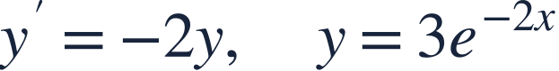
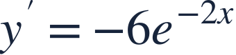
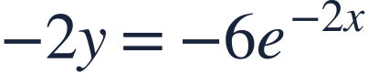
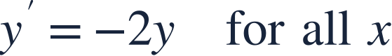
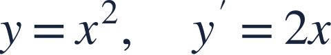

Differential equations and verification
미분방정식과 해 검증

A proposed solution must satisfy the differential equation for an interval, not just at one point.
해 후보는 한 점만이 아니라 구간에서 미분방정식을 만족해야 합니다.

A proposed solution must satisfy the differential equation for an interval, not just at one point.
해 후보는 한 점만이 아니라 구간에서 미분방정식을 만족해야 합니다.
A differential equation relates a function to its derivatives.
미분방정식은 함수와 그 도함수의 관계를 나타냅니다.
Verify a solution by substituting its derivative and its value into opposite sides.
해의 도함수와 함숫값을 양변에 각각 대입해 일치하는지 확인합니다.

Differentiate the candidate, including the inner factor −2.
해 후보를 미분하며 안의 계수 −2도 곱합니다.

Substitute the candidate into the right side independently.
우변에도 해 후보를 따로 대입합니다.

Both expressions agree for every real x, so this is a solution.
모든 실수 x에서 두 식이 같으므로 해입니다.
Passing through an initial point does not by itself prove the differential equation.
초기점을 지난다는 사실만으로 미분방정식의 해가 되지는 않습니다.

Does this y solve the displayed equation on all real x?
이 y는 표시된 방정식을 모든 실수 x에서 만족하나요?